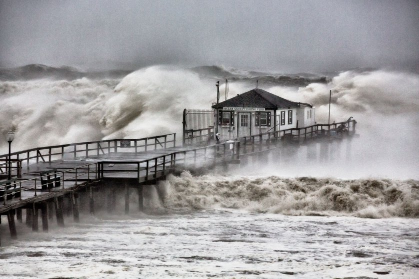
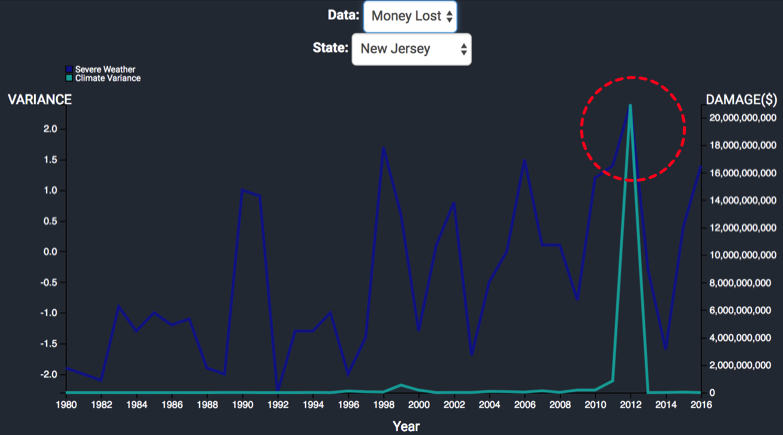
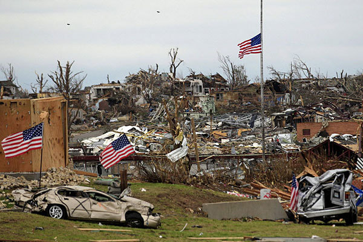
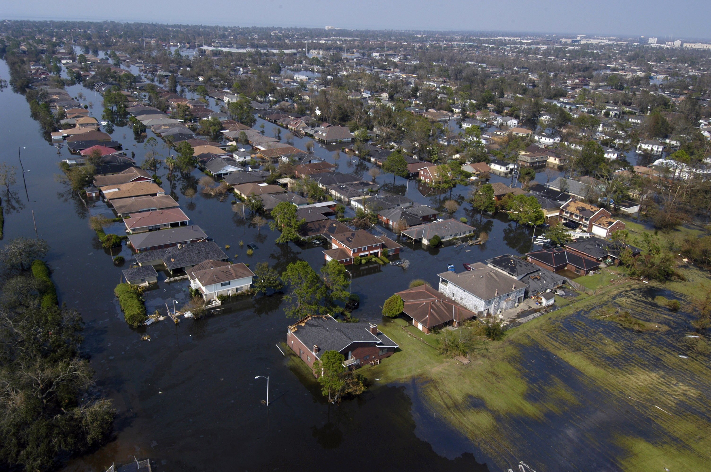
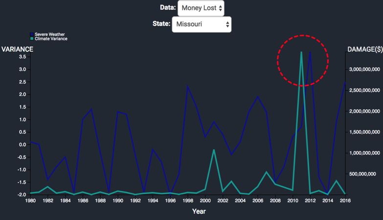

Severe weather occurrence is, and has been, on the rise. The number of severe weather events recorded in 2016 was 5 times as high as it was in 1980.
Click, drag, and move the bottom timeline to zoom in on certain areas. Click the events in the "Filter"
region to focus on specific severe weather events.
Volume of Severe Weather Events Recorded by Year
What Newspapers Have Been Saying
Click through to see articles that discuss the correlation between climate change and severe weather, and click on the photos to be redirected to the article.
Compare Climate Variance with Severe Weather Effects per State
Interact
Change the state and data by clicking on the dropdown buttons
Major Storms
Hover to find out more.
Click "Investigate Climate" to see the relation between each storm and climate variance above.
Hurricane Sandy

Date: October 22, 2012 Damage: $75 billion Fatalities: 233

Joplin Tornado

Date: May 22, 2011 Damage: $2.8 billion Fatalities: 161
Hurricane Katrina

Date: August 23, 2005 Damage: $108 billion Fatalities: 1,833

Climate Change
“There’s one issue that will define the contours of this century more dramatically than any other, and that is the urgent threat of a changing climate.”
Barack Obama, Former President of the United States of America
State Temperature Change and Weather Events by Year
You've seen the uptick in severe weather events. You've seen the toll climate change takes. Now explore more and dive into the
detail of how climate change and severe weather events have changed over time for the whole nation.
Use the timeline to change year, and hover over states to see the number of severe weather events.
Interact further by clicking the buttons below - you can filter severe weather events to look at specific types,
hide weather events to focus just on climate variance, or transition the map to a bar-chart of states based on how
many severe weather events have occurred in that year.
Disclaimer: We are taking a random sampling of the severe weather occurences per year due to the dataset size, and certain weather events were not properly documented over the years.